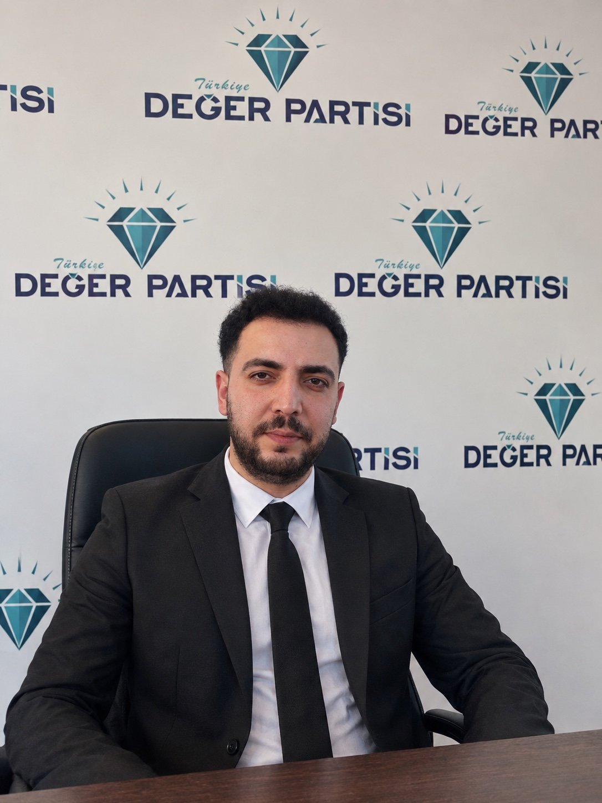

Mersin için değer üretmeye devam ediyoruz
Yeni programlar, saha çalışmaları ve duyurular bu alanda yayınlanacak.
Mersin İl Başkanlığımızın çalışmaları, duyuruları, etkinlikleri ve resmî iletişim kanalları tek bir dijital merkezde.
Resmî dijital iletişim merkezi
Vatandaşlarımızla doğrudan iletişim kuran, yerel sorunları dinleyen ve çözüm odaklı çalışmalar geliştiren bir il başkanlığı yapısı.
Mersinlilerin görüş, öneri ve taleplerini doğrudan dinleyen saha çalışmaları.
İl Başkanlığımızın güncel açıklamaları, programları ve kamuoyu bilgilendirmeleri.
Mersin'in ilçeleri ve mahalleleri için yerel ihtiyaçlara odaklanan çalışmalar.

“Mersin için ortak akıl, güçlü iletişim ve değer üreten bir siyaset anlayışıyla çalışıyoruz.”
Değer Partisi Mersin İl Başkanı Mehmet Solak, Mersin için ortak akıl, güçlü iletişim ve değer üreten bir siyaset anlayışıyla çalışmalarını sürdürmektedir.
Yönetim kadrosu için hazır yapı. İsimler ve görevler doğrudan bu kartlara eklenebilir.
Yeni programlar, saha çalışmaları ve duyurular bu alanda yayınlanacak.
Resmî sosyal medya ve e-posta kanallarımız üzerinden bize ulaşabilirsiniz.
Yeni saha programları ve ziyaretler burada paylaşılacak.
Tüm dijital kanallar tek merkezde toplandı.
Program bilgisi açıklandığında burada yayınlanacaktır.
İlçe programları ve saha ziyaretleri bu takvimde yer alacaktır.
Basın ve kamuoyu programları için duyuru alanı.


Resmî iletişim kanallarımızdan tek tıkla ulaşabilir veya aşağıdaki başvuru alanını kullanabilirsiniz.
İletişim görselimizdeki QR kodu telefonunuzun kamerasıyla okutabilirsiniz.
İl başkanlığının açık adresi eklendiğinde harita doğrudan bina konumuna sabitlenebilir. Şimdilik Mersin merkez gösterilmektedir.